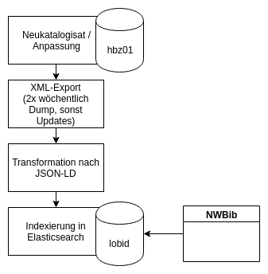

Auf der Zielgeraden –
Erweiterung der NWBib-Raumsystematik mit Wikidata
Adrian Pohl /
@acka47 &
Linked
Open Data, Hochschulbibliothekszentrum NRW (hbz)

Köln, 2019-101-26
Diese Präsentation:
http://slides.lobid.org/nwbib-treffen-2019//

Agenda
- Technischer Hintergrund
- Struktur & Darstellung
- Wikidata als Infrastruktur
- Status: Übergangsphase
- Aktualisierung der Aleph-Daten
- Maßnahmen zum Änderungsschutz
- Katalogisierung nach der Erweiterung
1. Technischer Hintergrund
nwbib.de:
eine Webanwendung basierend auf der lobid-resources-API
lobid
Dateninfrastruktur für Bibliotheken, Archive, Museen
Das hbz entwickelt seit 2009 Software im Bereich Linked Open Data
Leitlinien:
1. Publikation offen lizenzierter Daten zur freien Nutzung
2. Nutzung domänenübergreifender Web-Standards
3. Bereitstellung von Web-APIs plus Endnutzeroberflächen
Datenquellen und -formate

Einheitlicher Zugriff bei unterschiedlichen Quellformaten und -systemen
ETL-Prozess
Dokumentation
2. Struktur und Darstellung
Wie sollen die neuen Systemstellen in die bestehende Raumsystematik eingegliedert werden?
Fragen
Sollen Stadtbezirke angezeigt werden?
Soll die jeweilige Treffermenge angezeigt werden?
Sollen die kirchlichen Gebieten hierarchisiert werden?
Was ist mit der Euregio?
Gibt es weitere zu klärende Fragen?
Diskussion am Beispiel des Prototyps
Wikidata als Infrastruktur
Wikidata
Eine Knowledge Base
Ein Wikimedia-Projekt
Strukturierte Daten
Multilingual
Kollaborativ
CC0
Basierend auf Aussagen und Referenzen
Für Menschenn und Maschinen
Wikidata-Statistiken
Über 54 Millionen Einträge (Entwicklung)
30-40.000 aktive Editoren pro Monat (2018, Quelle)
Ungefähr 3,5 Millionen SPARQL-Anfragen pro Tag (2018, Quelle)
Mehr Informationen und Links: Wikidata-Statistik-Seite
Wikidata-Datenmodell I

Wikidata-Datenmodell II
Eigenschaften und Klassen sind editierbar wie alle anderen Einträge auch
Vorschlagen neuer Eigenschaften und Abstimmungsprozess
Eigenschaftseinschränkungen
"Einschränkungen sind Hinweise, keine harten Einschränkungen, und sie sind als Hilfe oder Führung für den Bearbeiter gedacht."
Siehe https://www.wikidata.org/wiki/Help:Property_constraints_portal/de
Beispiel: Beschränkungen der Eigenschaft "GND"
Identifikatoren
Momentan mehr als 3.500 externe Identifikatoren enthalten
Status: Übergangsphase
From strings to things
Zunächst Matching existierender Text-Stringsauf Wikidata.
Dann: Erweiterung der Systematik mit den gewonnenen kontrollierten Werten
Schließlich: Erfassung von Systematik-IDs in der täglichen Katalogisierung.
Stand des Matchings
300.535 von 301.697 Einträgen mit den Notationen 99, 97, 96,36, 35 und einem GSW sind gematcht. Das sind 99,6%.
1162 Titel ohne Wikidata-Match, Liste der nicht gematchten 23 GSW
Mit ein paar Wikidata-Anpassungen kommen wir leicht auf >50 nicht-gematchte Strings/Titel
Stand der Systematikanzeige
Siehe den Prototyp unter https://test.nwbib.de/classification?t=Raumsystematik
Wird generiert aus den lobid-Daten.
Trefferzahlen sind jeweils aktuell.
Aktualisierung der Labels ist in der Übergangsphase umständlich und nicht aktuell.
Ansonsten sieht es schon ganz gut aus, ist aber instabil.
Maßnahmen zum Änderungsschutz (s.u.) werden die Probleme beheben
Raus aus der Übergangsphase, hin zu einem stabilen System
Aktualisierung der Aleph-Daten
Verfahren und Dauer
Dauer der Batch-Anpassung im Verbundsystem etwa zwei bis drei Monate inklusive Vorbereitung
lobid-Team spezifiziert Anpassungsbedarf, Verbundgruppe aktualisiert die Titel
Frage: Müssen auch die Lokalssysteme aktualisiert werden? (Dann dauert es deutlich länger.)
Fragen zur Umsetzung
Gibt es irgendeinen Grund, die alten GSW in Aleph anstatt in einer externen Datei aufzuheben?
Was wird konkret in Aleph erfasst? – Vorschlag: IDs + Ortsansetzung
Maßnahmen zum Änderungsschutz
Mögliche Probleme der Wikidata-Nutzung
Vandalismus, inkorrekte Anpassungen (bei der Typisierung, Ortshierarchien etc.)
Downtime
Eine eigene, unabhängige, versionierte Version der Systematik ist sinnvoll.
Wie setzen wir das am besten um?
Vorschlag
Erweiterung der existierenden Raumsystematik in SKOS um die neuen Systematikstellen aus Wikidata
Einrichtung einer NWBib-Eigenschaft in Wikidata (zum Verlinken auf Systematikstelle und Suchergebnisse)
Monitoring von Wikidata bzw. regelmäßiger Abgleich (und womöglich Wikidata-Korrekturen)
Sämtliche raumklassifikatorischen Funktionen in nwbib.de basieren auf der SKOS-Datei
Wikidata sollte primäres System der Systematikpflege bleiben!
Katalogisierung nach der Erweiterung
Prozess
Erfassung im Aleph-Client
Werte für 700n werden in einer Systematik-Ansicht gesucht und per Klick übernommen
Falls nötige Systematikstelle vorhanden: Ergänzung durch Anlage einer neuen Wikidata-Aussage
Automatische Aktualisierung der SKOS-Systematik inklusive Begutachtung der Änderungen